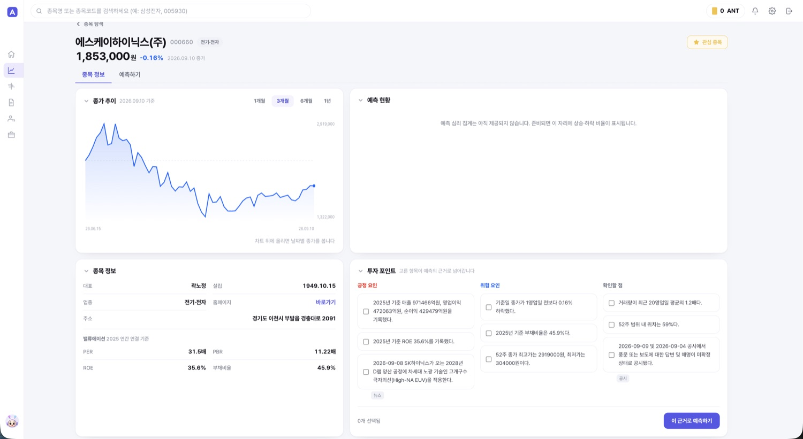
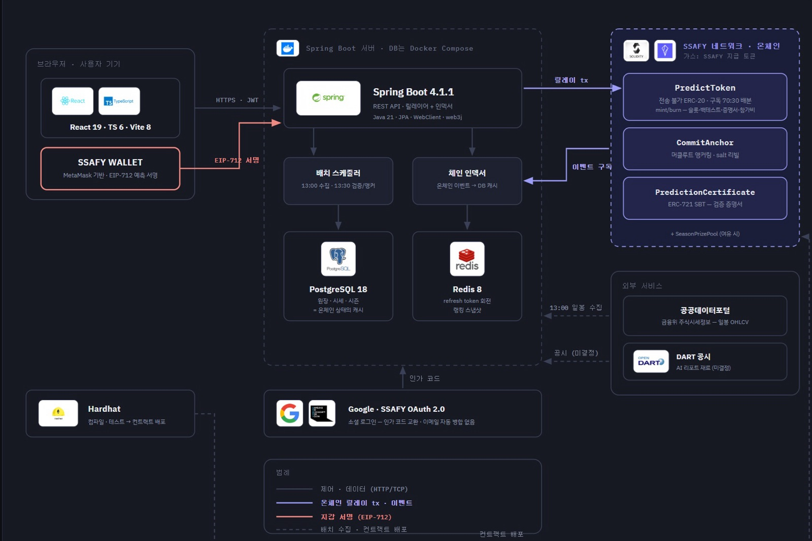
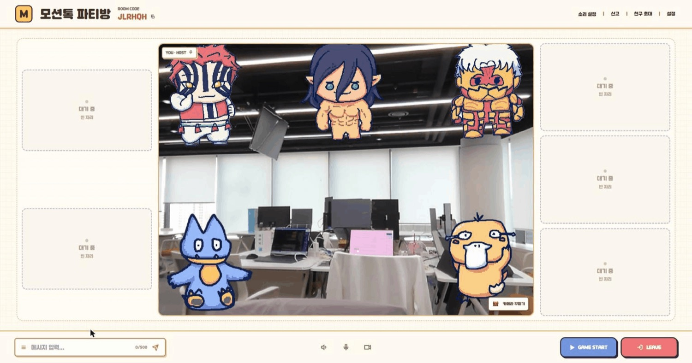
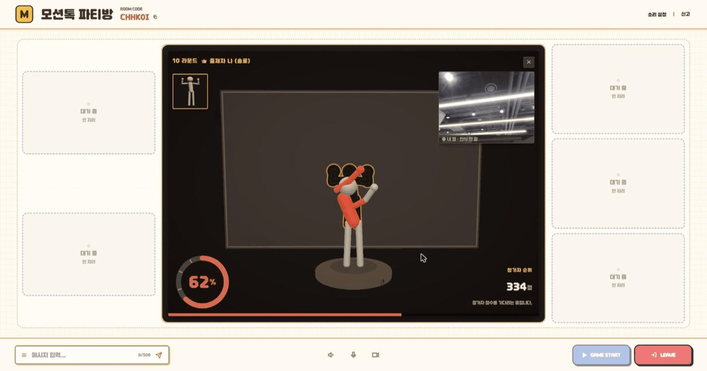
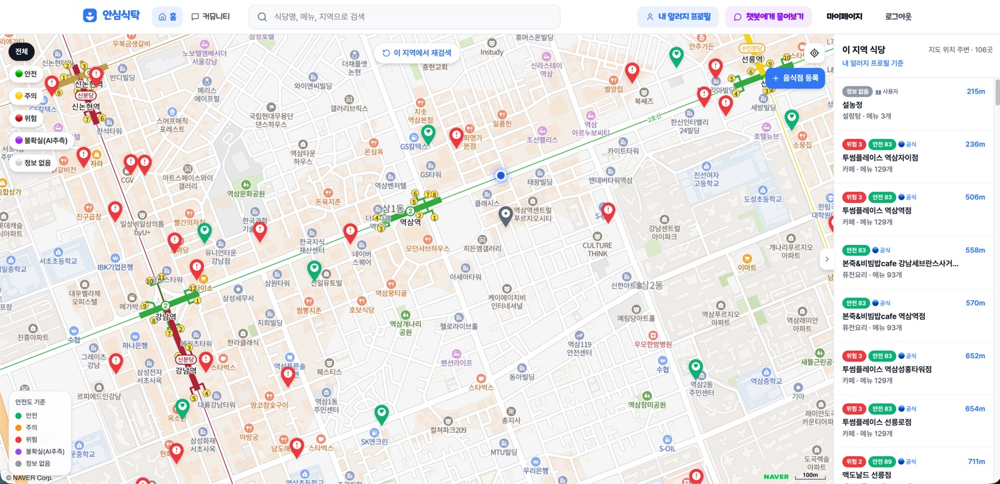
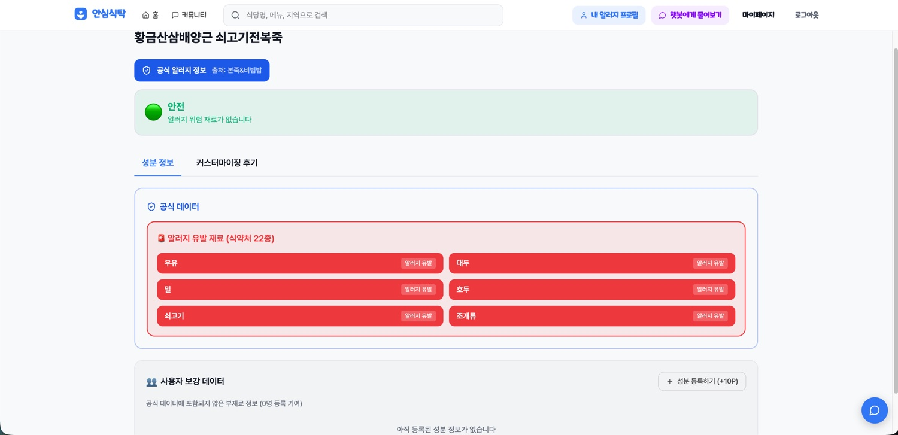
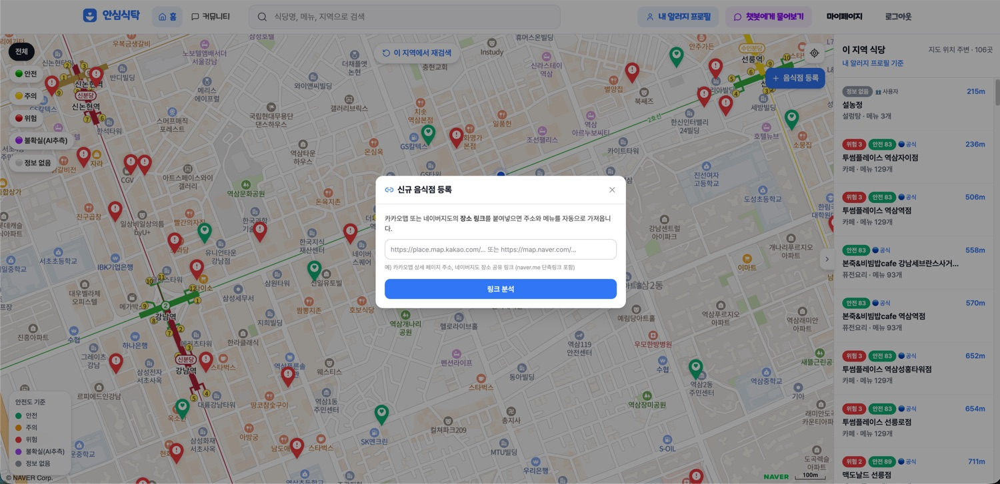

BACKEND ENGINEER · PORTFOLIO 2026
임대연
Backend Engineer · Java / Spring Boot
틀린 값이 남지 않는 서버를 만듭니다.
토큰을 즉시 폐기할 수 있게, 중복 요청이 예외를 만들지 않게, 원장이 나중에 고쳐지지 않게.
네 개의 서비스에서 인증 · 정합성 · 데이터 파이프라인을 맡았습니다.
토큰을 즉시 폐기할 수 있게, 중복 요청이 예외를 만들지 않게, 원장이 나중에 고쳐지지 않게.
네 개의 서비스에서 인증 · 정합성 · 데이터 파이프라인을 맡았습니다.
EMAIL
eodos6480@gmail.com
GITHUB
github.com/rilac
BLOG
velog.io/@asd990702
01
ProfileOverview엔테나MoToK안심식탁SOOP회고
Profile & Tech Stack
SECTION 01Education
삼성 청년 SW·AI 아카데미 (SSAFY) 15기
2026.01 ~ 2026.12 예정 · 재학 중
관통 · 공통 · 자율 프로젝트 3회 수행 (본 포트폴리오 프로젝트 3건)
상명대학교 (서울) · 경영학 & 컴퓨터과학 복수전공
2018.03 ~ 2025.09 졸업
요구사항 뒤의 목적을 먼저 확인하는 습관이 경영학 전공에서 왔습니다
KIC캠퍼스 Java 풀스택 국비지원교육
2023.01 ~ 2023.06 (6개월) 수료
SECTION 02Certificate & Record
삼성 SW 역량테스트 A형
2026.04.22 취득
2026 SSAFY AI 챌린지 (Kaggle · 팀 A175)
팀 최고 Private 0.89
Qwen2.5-VL 파인튜닝 실험과 데이터 처리를 맡아 멀티모달 학습 파이프라인을 경험
SQLD (SQL 개발자)
2026.09.11 취득 · 한국데이터산업진흥원
OPIc IM2
2026.07.01 취득
SECTION 03Activity
SSAFY Spring Boot 스터디 · 공동 리더 (약 20명)
2026.03 ~ 진행 중
명세서를 읽고 → 직접 구현 → 강의 영상으로 검증하는 학습 사이클을 설계하고 실습 레퍼런스 코드와 강의 영상 5편을 제작했습니다.
https://www.ssafy-study.site/studies/1
https://www.ssafy-study.site/studies/1
알고리즘 풀이 기록 · 기술 블로그
https://github.com/rilac/BKJN
https://velog.io/@asd990702
https://velog.io/@asd990702
SECTION 04한 줄 소개
"지금 동작한다"와 "동시에 들어와도 동작한다"는 다른 문제라고 생각합니다.
서버가 틀린 값을 남기지 않게 만드는 것을 제 일로 봅니다.
서버가 틀린 값을 남기지 않게 만드는 것을 제 일로 봅니다.
깊이 공부한 것인증 토큰의 수명 관리(팬텀 토큰 · 회전 · 즉시 철회)와 동시성 아래의 멱등성(Redis Lua · SETNX ·
INSERT IGNORE · DB 트리거). 가장 깊이 공부한 축이고 네 프로젝트에서 모두 맡았습니다.단기 목표틀리면 곧바로 사고가 되는 도메인(인증 · 정산 · 주문)에서 테스트와 관측 지표까지 포함해 기능을 끝내는 백엔드가 되는 것.
중장기 목표트래픽이 늘어도 정합성이 무너지지 않는 시스템을 설계하고 그 판단의 근거를 숫자로 설명할 수 있는 사람이 되는 것이 중장기 목표.
SECTION 05Tech Stack주 스택 · Java / Spring Boot
LANGUAGE
 Java 17·21
Java 17·21
 TypeScript
TypeScript
 JavaScript
JavaScript
 Python
Python
Java 17·21
TypeScript
JavaScript
Python
BACKEND
 Spring Boot 3·4
Spring Boot 3·4
 Spring Security
Spring Security
 JPA / MyBatis
JWT
JPA / MyBatis
JWT
 Gradle
Gradle
Spring Boot 3·4
Spring Security
JPA / MyBatis
JWT
Gradle
DATA
 MySQL 8
MySQL 8
 PostgreSQL 18
PostgreSQL 18
 Redis 7·8
Flyway
Redis 7·8
Flyway
MySQL 8
PostgreSQL 18
Redis 7·8
Flyway
FRONTEND
 React 18·19
React 18·19
 Vue 3
Vue 3
 Vite
Vite
 Tailwind
Tailwind
React 18·19
Vue 3
Vite
Tailwind
INFRA
 Docker Compose
Docker Compose
 AWS EC2·RDS·S3
AWS EC2·RDS·S3
 Nginx
Nginx
 GitLab CI
GitLab CI
Docker Compose
AWS EC2·RDS·S3
Nginx
GitLab CI
REALTIME
STOMP / WebSocket
LiveKit SFU
Spring AI
COLLAB
 Git
Git
 Jira
Notion
Postman · Swagger
Jira
Notion
Postman · Swagger
Git
Jira
Notion
Postman · Swagger
02
ProfileOverview엔테나MoToK안심식탁SOOP회고
Projects Overview최근 순 · 팀 규모와 내 역할을 먼저 밝힙니다
PROJECT 1SSAFY 특화 PJT
엔테나 (Antenna)
2026.08.19 ~ 09.13 (4주)·6인 팀·팀장 · 백엔드 · 인프라 (기여도 30%)
예측을 커밋·리빌로 봉인해 블록체인에 기록하고, 누구나 검산할 수 있게 만든 AI 투자 예측 플랫폼
공공데이터 6년치 백필을 일 1만 콜 한도 안에서 성립시킨 시세 파이프라인 단독 소유(98.7%)
append-only DB 트리거로 원장·체결·예측을 운영자조차 못 고치게 잠금
Google·SSAFY OAuth 2.0 + JWT와 Redis refresh 회전까지 인증 100% 단독
Spring Boot 4PostgreSQL 18Redis 8React 19DockerGitLab CI
PROJECT 2SSAFY 공통 PJT
MoToK (MotionTok)
2026.07.15 ~ 08.25 (6주)·6인 팀·팀장 · 백엔드 (기여도 30%)
웹캠 모션 인식(MediaPipe)으로 최대 8명이 함께 즐기는 실시간 멀티플레이 미니게임 플랫폼
세션 종료 경로 5개를 한 클래스로 통합해 REST·STOMP·SFU까지 한 번에 끊습니다
Refresh 회전을 Redis Lua로 원자 실행 + sid 가드로 동시 갱신이 정상 세션을 죽이던 문제 해소
게임 정산 3중 진입을 SETNX 가드로 1회 실행 보장
Spring Boot 4MySQL 8.4Redis 7.4STOMPLiveKit SFUVue 3
PROJECT 3SSAFY 관통 PJT
안심식탁
2026.06.05 ~ 06.26 (3주)·2인 팀·팀장 · 백엔드 전반 (기여도 70%)
식약처 22종 알러지 기준으로 메뉴 안전도를 자동 판정하고, 재료 정보가 없는 메뉴는 생성형 AI가 보완하는 외식 플랫폼
쿼드트리 공간 분할 시딩으로 카카오 로컬 API의 쿼리당 45건 한계를 재귀 4분할로 돌파
Phantom Token이라 원본 JWT는 Redis에만, 클라이언트엔 SHA-256 해시만
AI 추정이 절대 '위험' 확정 근거가 되지 않게 출처를 3계층으로 분리
Spring Boot 3.3Spring AIMySQL 8RedisMyBatisVue 3
PROJECT 41인 개발 · 배포·운영 경험
SSAFY SOOP
2026.03.23 ~ 07.24·1인·기획 · 개발 · 배포 · 운영 전부
Mattermost 계정으로 교육생임만 증명하고, 누가 썼는지는 서버 응답에조차 싣지 않는 익명 커뮤니티
63커밋 100% 단독. 16기 오픈부터 졸업 기수 차단 마이그레이션까지 실사용자를 받으며 직접 운영했습니다
타인 글 첫 조회에서만 500이 뜨던 운영 장애의 근본 원인을 추적해 제거
테스트 32클래스 · @Test 181개 · Flyway V1~V17 스키마 버저닝
Spring Boot 3MySQLRedisFlywayReact 18GitHub Actions
03
ProfileOverview엔테나MoToK안심식탁SOOP회고
Project 1. 엔테나 — 검산 가능한 AI 투자 예측 플랫폼서비스 구조와 내 담당 영역
기간 2026.08.19 ~ 09.13 (4주)
팀 6인 — 팀장 · 백엔드 · 인프라 (기여도 30%)
기여 작업 커밋 83건
배포 stock-antenna.com
서비스 — 예측을 봉인하고, 판정을 검산합니다
주식 예측을 등록 시점에 커밋 해시로 봉인하고 매 영업일 머클루트 1건을 온체인에 앵커링해, 나중에 말을 바꾸는 것을 구조적으로 막습니다. 회원은 판정 결과를 3단계로 직접 검산할 수 있습니다.
AI 리서치가 재무·공시·뉴스를 근거 카드로 제시, 그 근거를 골라 예측을 등록
예측 커밋·리빌, 대상·방향·목표가·기간은 수정·삭제 API 자체가 없음
모의투자는 과거 일봉을 게임일 단위로 재생, 종료 시 AI 복기 리포트
종목 상세 — AI가 뽑은 긍정 요인 · 리스크 요인 · 확인할 점을 근거로 선택해 예측 등록

기술 아키텍처

내 담당
시세 수집 배치 · PostgreSQL 원장 · OAuth/JWT 인증 · 모의투자 시즌 엔진 · Docker/Nginx/GitLab CI
팀
스마트컨트랙트·체인 인덱서(김성령) · AI 리서치 본체(이상민) · 화면(4인 공동)
98.7%
market 도메인 코드 소유율
100%
백엔드 auth 도메인 (8파일 605줄)
6년치
일봉 백필 (2020-01-02~)
1,660영업일
KOSPI 시총 상위 300종목
04
ProfileOverview엔테나MoToK안심식탁SOOP회고
Project 1. 엔테나 — 문제 해결외부 API 한도 · LLM 비용 · 데이터 신뢰성
① 백필이 영원히 끝나지 않던 문제
WHY
공공데이터포털 일 1만 콜 한도 안에서 6년치(2020-01-02~) 일봉을 받아야 했습니다
대안 검토. ① 종목별 호출은 하루 약 2,800콜, 3년 백필이 물리적으로 불가 ② 날짜(
basDt) 단위 호출 채택, 한 번에 그날 전 종목HOW
수집할 게 없는 날과 아직 안 받은 날을 구분
응답을 DTO로 바인딩하지 않고 JsonNode 트리로 파싱. 포털이 ⓐ데이터 없는 날
items를 빈 문자열로 ⓑ결과 1건이면 배열 대신 객체로 ⓒ키가 틀리면 HTTP 200에 XML 오류를 실어 보냅니다공휴일은 응답이 0건이라 미수집으로 남아 매 회차 재호출됐습니다 → 0건 응답도 수집 완료로 기록하도록 변경
일봉 적재는 PostgreSQL
ON CONFLICT upsert — 같은 날을 몇 번 돌려도 결과가 같습니다AFTER
공휴일 약 50일 × 매 회차 재호출(시간당 600콜, 17시간이면 한도 소진) → 재호출 0건
② LLM 키 토큰 고갈 — AI 호출 구조 전면 개편
WHY
전 종목 일괄 배치가 팀 공용 LLM 키를 하루 만에 말려 서비스 전체가 멈췄습니다
개편 전 실측은 하루 약 1,600콜 · 토큰 1.2M (뉴스 요약 ~900 + 종목 브리핑 301 + 투자 포인트 300)
HOW
"모든 종목을 미리" → "열어본 종목만 그때"
투자 포인트를 요청 시점 생성으로 전환하고, 같은 종목 동시 요청은 종목별 JVM 락으로 1회만 태움
AiClient에 401 즉시 중단 · 429 백오프 재시도 · OpenAI 호환 제공자 교체(AI_BASE_URL) 추가AI 출력 충실성 가드로
temperature 0 + 입력에 없는 숫자 차단AFTER
하루 호출 = 시장 브리핑 1 + 실제로 연 종목 수 + 시즌 종료 수 (백엔드 574건 전부 통과)
③ 원장을 아무도 못 고치게 — append-only 트리거
문제온체인 앵커가 외부 증명이라면, DB에도 내부 증명이 필요했습니다. 권한
REVOKE는 테이블 소유자에게 걸리지 않아 쓸 수 없었습니다(ddl-auto가 돌려면 앱 계정이 소유자여야 함)해결PostgreSQL BEFORE 트리거로
token_ledger·season_trades의 UPDATE/DELETE를 전면 거부했습니다. predictions는 판정 컬럼만 허용(대상·방향·목표가·기간·등록시각 불변), 리빌 전 salt는 @JsonIgnore로 직렬화 차단RESULT
운영자·관리자·애플리케이션 버그까지 포함해 원장과 체결 기록을 고칠 수 있는 경로가 사라졌습니다
④ 로컬에선 재현되지 않던 신규 가입 100% 실패
문제2026-09-03, 신규 구글 가입이 전부 500.
users.nickname을 NULL 허용으로 바꿨지만 ddl-auto: update는 기존 NOT NULL을 풀어 주지 않습니다. 그보다 먼저 만들어진 배포 DB에만 옛 제약이 남아 있었습니다왜 안 보였나기존 회원 로그인은 INSERT를 타지 않아 멀쩡했고 로컬은 테이블을 새로 만들기 때문에 재현 자체가 되지 않았습니다
해결매 부팅마다 도는 멱등 스크립트에
ALTER ... DROP NOT NULL을 추가했습니다(이미 NULL 허용이면 no-op). 이 파일을 ddl-auto가 못 고치는 옛 스키마를 모아 두는 자리로 규정하고 Testcontainers로 NOT NULL을 다시 건 DB를 띄워 부팅 SQL이 실제로 푸는지 검증하는 테스트를 붙였습니다AFTER
배포 DB가 부팅 시 스스로 복구 — 같은 유형의 스키마 드리프트를 한 곳에서 처리
05
ProfileOverview엔테나MoToK안심식탁SOOP회고
Project 2. MoToK — 웹캠 모션 인식 실시간 파티게임서비스 구조와 내 담당 영역
기간 2026.07.15 ~ 08.25 (6주)
팀 6인 — 팀장 · 백엔드 (기여도 30% · 인증 · 실시간 세션 · 게임 정산)
기여 커밋 476 / 1,809 (26.3%) · 소스 +48,385 / -6,360
배포 motok.co.kr
서비스 — 서버는 시간과 정산만, 인식은 브라우저가
최대 8명이 한 방에서 웹캠으로 몸을 움직여 겨루는 미니게임 5종. 모션 인식·점수 계산은 브라우저 로컬 MediaPipe가 하고 서버는 라운드 시각의 단일 권위와 범위 클램프, 정산 1회 실행 보장만 맡습니다.
8명분 영상을 서버가 추론하면 비용을 감당할 수 없고, 전부 클라이언트에 맡기면 사람마다 라운드 종료 시점이 달라집니다 → 하이브리드
미니게임 5종은 별따라 손따라 · 캐치캐치 리듬 · 그대로 멈춰라 · 그림으로 말해요 · 모션 낚시
예외는 "그림으로 말해요". 채점에 외부 AI 키가 필요해 채점만 서버로 이관(정답어는 서버 세션에만, 프롬프트 미포함 = 블라인드 채점)
대기실 — 배경 제거 아바타를 로컬 캔버스에서 합성해 송출 (서버는 영상 처리 없음)

그대로 멈춰라 — 브라우저가 포즈 유사도를 계산하고, 서버는 라운드 시각과 정산만 소유

아키텍처 — 제어 평면과 미디어 평면의 분리
내 담당
인증 도메인 전체 · 세션 종료 통합 · Redis 게임세션 저장소와 정산 가드 · 유령 멤버 정리 · 그림으로 말해요 · 별따라 손따라 · 관리자 API
팀
LiveKit 도입·설정과 인프라(compose · CI · nginx 운영)는 팀원 담당
06
ProfileOverview엔테나MoToK안심식탁SOOP회고
Project 2. MoToK — 문제 해결세션 · 동시성 · 실시간 연결
① 로그아웃했는데 계속 온라인이던 계정
WHY
끊어야 할 연결이 세 층인데, 종료 처리가 5개 경로에 흩어져 있었습니다
REST에서 sid 폐기는 다음 요청을 막는 장치라 즉시 듣습니다
STOMP는 인증이 CONNECT 때 한 번뿐이라 이미 열린 소켓엔 소급되지 않습니다
LiveKit은 접속 토큰을 미디어 서버가 자기 비밀로 검증해 앱의 sid 폐기가 아예 닿지 않습니다
탈퇴한 계정이 하트비트로 접속 상태를 되살려 친구 목록에 온라인으로 남고 개인 큐로 귓속말·초대를 계속 받고 화상에 그대로 붙어 있었습니다.
HOW
순서를 아는 곳을
SessionTerminator 하나로로그아웃 · 밀어내기 · 탈퇴 · 비밀번호 변경 · 재설정 5개 경로를 한 클래스로 통합
sid 폐기 → 프레즌스 제거 → 방 즉시 퇴장 → STOMP 세션 강제 종료 → SFU
RemoveParticipant twirp 호출(알림 프레임이 나갈 2초 유예 후 소켓 종료)밀어내기 알림을 userId가 아닌 대상 sid를 지목해 발송, 첫 로그인이 스스로를 튕기던 오판 차단
AFTER
방장 밀어내기 시 게임 시작 권한 공백 17초 → 0초 · 새 정리 단계가 생겨도 고칠 곳은 한 곳
② 새 기기로 로그인했더니 잠시 뒤 로그아웃되던 문제
WHY
단일 세션 정책이라 새 로그인이 키를 덮어쓰는데, 밀려난 옛 기기의 갱신 스케줄러가 뒤늦게 옛 토큰으로 갱신을 시도했습니다
해시만 비교하던 구현은 이를 모르는 토큰 = 유출로 판정해 재사용 탐지가 작동, 새 로그인 세션까지 DEL
탭을 여러 개 열어두는 게 기본인 웹 게임이라, 동시 갱신이 상시 상황이었습니다
HOW
판정 기준을 바로잡고, 판정 전체를 원자 단위로
sid 가드. 저장된 sid ≠ 제시 토큰의 sid면 재사용 판정 없이 그냥 거절. 남의 세션 토큰은 그저 남의 것입니다
Redis Lua 한 덩어리로 검사+회전을 원자 실행. 나눠 실행하면 동시 요청 둘이 각자 회전해 서로의 토큰을 죽입니다
유예 창 30초로 회전 직후 직전 토큰도 수리, 창을 넘긴 것만 진짜 유출로 판정
저장은 원문이 아닌 SHA-256 해시입니다. Redis는 인증 없이 붙는 일이 잦아 덤프·MONITOR로 원문이 새면 그 자체가 남의 세션을 되살리는 자격증명이 됩니다 (고엔트로피 JWT라 느린 bcrypt는 불필요)
AFTER
밀려난 기기의 뒤늦은 갱신 → 새 세션 유지한 채 거절 · 다중 탭 동시 갱신 오탐 제거
③ 정산이 두 경로에서 동시에 들어오는 문제
문제타이머 만료 스케줄러와 전원 제출 조기 정산이 동시에 정산을 부를 수 있었습니다. 세션 상태가 애초에 Redis에 있어 DB 트랜잭션 경계가 닿지 않습니다
해결
game:session:{roomId} Hash(TTL 30m) / :scores / :ended:{sessionId} 3키 구조를 설계하고 SETNX를 선점한 한쪽만 정산 실행. 점수는 HSETNX로 참가자당 최초 1회만 수리. 같은 가드를 그림게임 AI 채점 정산에도 재사용했습니다이후 팀원이 확장했습니다. 방장 강제종료가 세 번째 호출자로 붙고 로테이션 게임용으로 가드 키에
roundIndex가 더해졌습니다. 가드를 손대지 않고 호출자만 늘릴 수 있는 구조라 설계 의도대로였습니다RESULT
중복 정산 · 중복 점수 제출 경로 제거 (재제출은 조용히 무시)
④ 통보 없이 사라진 사용자가 만든 빈 방
문제퇴장이 REST 단일 경로라 탭 강제 종료·브라우저 크래시·주소창 이탈 시 Redis members에 유령 멤버가 남고 실제 0명인 방이 로비에 계속 쌓였습니다
해결새 하트비트 프로토콜을 만들지 않고 서버가 이미 아는 신호를 재사용했습니다. 게임룸 입장 시 항상 걸리는
/topic/rooms/{id}/chat 구독을 재실 신호로 등록하고, DISCONNECT 후 유예 안에 재연결이 없으면 기존 leave를 호출(멱등이라 REST 퇴장과 중복돼도 안전)RESULT
방 삭제·방장 위임 기존 로직을 그대로 재사용해 분기를 늘리지 않고 유령 멤버 제거
07
ProfileOverview엔테나MoToK안심식탁SOOP회고
Project 3. 안심식탁 — 알러지 안전도 판정 외식 플랫폼서비스와 데이터 확보
기간 2026.06.05 ~ 06.26 (3주)
팀 2인 — 팀장 · 백엔드 전반 (기여도 70%) (프론트·배포 인프라는 팀원)
규모 REST 72개 · 테이블 33개(초기 15 → 18개 추가) · MyBatis 매퍼 15개(6개 신규)
문제 — "이 메뉴 먹어도 되나?"가 매 끼니 반복됩니다
프랜차이즈는 공식 알러지표가 있지만 개인 식당·신규 메뉴는 정보가 거의 없습니다. 내 알러지·기피 프로필을 등록해 두면 메뉴마다 안전 / 주의 / 위험을 자동 판정하고, 정보가 없는 메뉴는 생성형 AI가 보완하되 확정으로 승격하지 않습니다.
지도 — 내 알러지 프로필 기준으로 주변 식당을 안전도 색상으로 표시

메뉴 상세 — 식약처 22종 기준 유발 재료를 출처와 함께 표시

보여줄 데이터가 없으면 서비스가 성립하지 않습니다
WHY
카카오 로컬 키워드 검색은 rect 하나당 최대 45건(size 15 × page 3)만 회수됩니다
브랜드명으로 한 번 긁으면 전국 지점이 45건에서 잘립니다. 페이지네이션이 아니라 공간 분할이 답인 건 API 제약 자체 때문입니다.
HOW
전국 바운딩박스 → 쿼드트리 재귀 4분할
대한민국 전역(
lng 124.5~132.0 / lat 33.0~38.7)에서 시작해 meta.total_count > 45이면 중점 기준 4사분면으로 재귀 분할(MAX_DEPTH 12)45건 이하로 내려간 타일에서만 page 1~3 순회 · 타일 경계 중복은 카카오 place id 기준 dedupe
수집 후
category_group_code 필터 + 브랜드 판별로 동명 오탐 차단, insertIgnore로 중복 방지HOW
콜드스타트는 기동 시 멱등 시딩
SeedRunner(ApplicationRunner)가 데몬 백그라운드 스레드로 시딩을 돌려 서버 기동을 막지 않음brand_seed 플래그로 완료 브랜드는 skip → 재기동해도 무해, 브랜드 단위 try/catch로 실패 격리 후 다음 기동에 재시도RESULT
첫 사용자에게 보여줄 공식 데이터로 프랜차이즈 6개 브랜드 공식 메뉴 565건 × 알러지 19종 매트릭스를 직접 수집·정제
08
ProfileOverview엔테나MoToK안심식탁SOOP회고
Project 3. 안심식탁 — 인증 설계와 AI 사용 원칙JWT를 즉시 철회하기 · AI를 어디까지 믿을 것인가
① 세션 → JWT 전환의 대가: 즉시 무효화 불가
WHY
SPA 분리로 JWT를 도입했더니 탈취 시 만료까지 강제 로그아웃이 불가능했습니다
HOW
Phantom Token으로 원본은 서버에, 클라이언트엔 해시만
원본 JWT를 Redis
auth:access:<sha256> / auth:refresh:<sha256>에 보관, 클라이언트는 64자 해시만 보유 (access는 응답 바디, refresh는 HttpOnly 쿠키 Path=/api/v1/auth)요청 시
[0-9a-f]{64} 정규식으로 Redis 조회 전에 형식 불일치를 거름 → 원본 조회 → 서명·만료·typ 검증(refresh를 access로 쓰는 교차 사용 차단)Redis 키 TTL = 토큰 만료 → 만료 관리 코드가 따로 필요 없습니다. 키 삭제 = 즉시 강제 로그아웃
Redis를 무영속(
--save '' --appendonly no)으로 둔 것도 의도 — 재시작 = 전원 강제 로그아웃을 보안 동작으로 규정AFTER
클라이언트가 클레임·서명을 볼 수 없고, 서버는 키 삭제 한 번으로 세션을 끊습니다
남은 한계 — HTTP 배포 구간이라 refresh 쿠키
secure=false, CORS allowedHeaders=*. HTTPS 전환과 헤더 화이트리스트가 다음 과제였습니다.② AI 추정은 경고를 확정하지 않습니다
알러지 서비스에서 틀린 "안전"은 사고, 남발된 "위험"은 무용지물입니다. 그래서 출처를 컬럼 플래그가 아니라 테이블 자체로 갈랐습니다 — 합치는 경로가 코드에 없으면 섞일 일도 없습니다.
AI 추정 결과는 절대 '위험' 확정 근거가 되지 않습니다.
AI_ESTIMATED 출처로만 흡수되고 사용자 합의 신뢰도 60% 이상일 때만 위험이 확정됩니다재료 추정은 여러 메뉴를 1회 호출로 배치, likelihood 1~100, 메뉴당 최대 8개, 후보 목록 밖 재료 생성 금지
③ 링크 한 줄로 식당 등록 — 전부 AI도, 전부 파서도 아닙니다
네이버 → LLM.
window.__APOLLO_STATE__ 블롭은 거대하고 스키마가 자주 바뀌어 결정적 파서가 계속 깨집니다 → Spring AI BeanOutputConverter로 record 강제 파싱. 노이즈 필드 21종을 재귀 제거하고 80,000자로 트림해 토큰 절감카카오 → 코드 파싱, panel3는 구조가 안정적이라 LLM 비용·비결정성을 감수할 이유가 없습니다
응답에 charset이 없어 한글이 깨지던 문제는 바이트 수신 후 UTF-8 명시 디코딩으로, 간헐 429는 UA 위장 + 3회 백오프 + 엔드포인트 폴백으로 처리
신규 음식점 등록 — 지도 링크 한 줄이면 주소·메뉴·가격이 자동으로 채워집니다

09
ProfileOverview엔테나MoToK안심식탁SOOP회고
Project 4. SSAFY SOOP — 1인 기획·개발·배포·운영익명성을 아키텍처로 보장하고, 운영 장애를 직접 추적했습니다
기간 2026.03.23 ~ 07.24
팀 1인 — 커밋 63건 100% 단독
규모 REST 39 · 엔티티 14 · 테스트 32클래스 / @Test 181 · Flyway V1~V17
운영 ssafy-soop.site 배포·운영 (현재 서버 내림) · 16기 오픈 · 졸업 기수 차단 마이그레이션
익명성을 "지키는 것"이 아니라 "가질 수 없게" 만들기
자체 가입을 열면 교육생 여부를 증명할 방법이 없습니다 → 이미 전원이 쓰는 MM 계정을 신원 증명 수단으로만 빌립니다. 덕분에 비밀번호를 저장하는 테이블 자체가 존재하지 않습니다
MM 호출에 connect 3s / read 5s 타임아웃. 4xx는 401, 타임아웃·5xx는 503으로 인증 실패와 외부 장애를 구분
관리자 경로는 Role 인가 위에 15분 TTL step-up 마커를 한 겹 더. 해시 미설정이면 fail-closed로 전면 차단, 기동 시 BCrypt 형식 정규식으로 오설정을 잡습니다
운영 장애 — "타인 글 첫 조회에서만 500"
증상
"16기 글만 안 보인다"로 제보됐습니다. 기수 필터 문제로 오인하기 딱 좋은 모양이었습니다
진짜 원인은 직전 릴리스에서 6개
insertIgnore에 일괄로 붙인 @Modifying(clearAutomatically=true)였습니다. INSERT 직후 영속성 컨텍스트를 비워 이미 로드된 Post가 detach되고 author LAZY 프록시 초기화가 LazyInitializationException으로 터졌습니다왜 일부만? 본인 글·24h 내 재조회·touch 갱신은 INSERT를 타지 않아 멀쩡했습니다. 실패한 건 첫 조회자뿐이고 신규 글은 전원이 첫 조회자라 전원 실패로 보였습니다
부수 피해같은 원인으로 신고 누적 자동 숨김까지 detach된 엔티티에 걸려 조용히 유실되고 있었습니다
HOW
호출부에 사전 존재 확인 가드가 있어 clear로 얻는 게 없습니다 → 6개 전부 제거
각
insertIgnore에 "켜지 말 것" 재발 방지 주석을 달고 GlobalExceptionHandler가 500/503에 스택트레이스를 남기도록 고쳤습니다. 이 장애는 어느 로그에도 흔적이 없었습니다검증은 Mockito 대신 H2를 MySQL 모드로 띄워 실세션으로 회귀 테스트
catch로 못 막는 500 — 예외를 "잡는" 대신 "생기지 않게"
문제좋아요 더블클릭·두 탭 동시 조회에서 500. IDENTITY 전략이라
save()가 즉시 INSERT를 날리고, 유니크 위반 시 Hibernate가 트랜잭션을 rollback-only로 마킹합니다. 예외를 catch로 삼켜도 커밋 시점에 UnexpectedRollbackException이 터집니다해결6개 경로를 네이티브
INSERT IGNORE로 전환해 중복이 예외 대신 0행 반환이 되게 했습니다. 다만 FK·NOT NULL 위반까지 경고로 강등되는 위험이 있어 사전 존재 확인 가드를 남기고 "가드를 제거하면 무증상 데이터 유실" 경고 주석을 붙였습니다토큰 회전 · 운영 품질
RFC 9700 유예 창. 회전을 구 RT 삭제 → tombstone → 신 RT 등록 → 유예 마커까지 Lua 하나로 원자 실행. 유예(20s) 안의 재제시는 다중 탭 경합으로 보고 직전 RT를 재발급, 창 밖만 탈취로 판정해 전 세션 폐기
Flyway V1~V17, prod는
flyway.enabled + ddl-auto: validate 이중 검증. V12에서 refresh_tokens 테이블을 폐기하며 정리 스케줄러 31줄이 통째로 사라졌습니다(Redis TTL로 자연 만료)스스로 아는 부채입니다. 레이트리밋은
ConcurrentHashMap 인메모리라 단일 인스턴스 전제. Redis를 이미 쓰는데도 남겨둔 지점이라, 수평 확장 시 INCR + EXPIRE로 교체해야 함을 주석에 명시해 두었습니다10
ProfileOverview엔테나MoToK안심식탁SOOP회고
회고 ① 못한 것과 한계아쉬운 지점을 알고 있다는 것이 다음 설계의 출발점입니다
하려고 했는데 못한 것
게임 세션 복구(MoToK)에서 끊긴 참가자가
GAME_START를 못 받는 문제를 0~3층으로 분해해 명세 개정 초안을 썼지만 팀 합의 전에는 서버 구현에 들어가지 않기로 해 0층(끊김 노출·강제 재접속·발행 실패 안내)까지만 구현했습니다. 1층 구독자 기반 roster 확정, 2층 세션 스냅샷 복구, 3층 ack로 반열림 소켓 탐지가 남았습니다.미사용 코드 정리(MoToK)로는 BE 매핑 62개와 FE 호출 경로를 대조하고 Spring 빈 · enum JSON 값 · 동적 문자열 참조 3가지 오탐을 손으로 걸러 조사 문서까지 냈지만, 공용 코드라 팀 합의를 기다리며 한 줄도 지우지 않았습니다.
부하 테스트 (MoToK · 엔테나). 동시성 로직(SETNX 가드 · Lua 회전)을 Mockito 단위 테스트까지만 검증하고 k6·JMeter 같은 부하 스크립트는 끝내 쓰지 못했습니다. 팀이 관측 지표(actuator · node-exporter)를 붙여 둔 상태에서도 몇 명까지 버티는가에 숫자로 답하지 못했습니다.
운영 백로그 (SOOP). 모더레이션 강화와 북마크 폴더를 WORKLOG §6 백로그에 적어 둔 채로 마무리했습니다. 혼자 만드는 서비스라 무엇을 안 할지를 정하는 것이 매번 가장 어려운 판단이었습니다.
팀이 넣어 둔 관리자용 Spring Batch 일별 통계가 실제 운영 판단에 쓰이지 않는다는 걸 확인하고 안심식탁에서 폐기와 대체(활동 로그)를 내가 주도했습니다. 남겨두면 유지비만 드는 코드였습니다.
전체 테스트가
OutOfMemoryError로 깨지던 문제를 힙 증설 대신 컨텍스트 캐시 32→8 + ddl-auto: create로 잡아 개인 브랜치에서 9건 실패·6분 → 714건 통과·55초까지 실측했지만 엔테나 dev에는 반영하지 못했습니다.엔테나 프론트엔드는 4명이 나눠 쓰는 공용 영역이라, 내 몫은 내가 만든 API를 화면에 붙이는 연결 작업이 중심이었습니다. 화면 설계까지 끌고 가 보고 싶었지만 분업상 양보했습니다.
MoToK 미디어 서버에서 LiveKit 도입·튜닝은 팀원 담당이라, 내가 만진 지점은 세션 종료 시
RemoveParticipant 한 곳뿐입니다. SFU를 직접 운영해 보는 경험은 다음으로 미뤘습니다.기술적 한계와 개선 방안
MoToK은 STOMP simple broker와 인메모리 스케줄·레지스트리를 쓰는 한 스케일아웃이 불가능한 단일 인스턴스 전제입니다. 서버 재시작 시 진행 중 게임의 종료 스케줄도 유실됩니다(현재는 새 게임 시작 시 덮어써 복구하는 임시 대응). → 외부 브로커(RabbitMQ/Redis Pub-Sub) + 분산 락(ShedLock)으로 옮기는 것이 다음 단계입니다.
SOOP은 이미 Redis를 쓰고 있으면서 로그인 제한만
ConcurrentHashMap으로 인메모리 레이트리밋을 남겨 뒀습니다. → INCR + EXPIRE 카운터로 교체하면 그대로 수평 확장 가능.안심식탁은 테스트가 0건이고(최종보고서에 한계로 명시), SOOP은 컨트롤러 슬라이스(
@WebMvcTest)가 비어 있습니다. 네 프로젝트 모두 커버리지 측정 도구(JaCoCo)를 붙이지 않아 수치로 말할 수 없습니다. → 다음 프로젝트는 JaCoCo와 커버리지 게이트를 CI 1일차에 넣습니다.엔테나는 배치와 API가 한 프로세스였습니다.
@Scheduled 기본 스레드 풀은 1개인데 풀 크기를 따로 두지 않아 모든 배치가 한 스레드를 나눠 쓰고 있었습니다. 40분짜리 AI 판정 배치를 켜면 5초 주기 체인 인덱서가 멈추는 구조라 켜기 전에 전용 데몬 스레드로 분리해 막았습니다. → 애초에 배치 워커를 별도 프로세스로 분리하는 게 맞는 구조였습니다.안심식탁은 3주라는 기간을 이유로 테스트를 건너뛰고(0건) 검증을 Swagger 수동 테스트에 의존했습니다. 최종보고서에 한계로 명시해 뒀지만, 기간이 짧을수록 오히려 회귀 비용이 크다는 걸 이후 프로젝트에서 체감했습니다.
안심식탁의 HTTPS 미완. refresh 쿠키
secure=false, CORS allowedHeaders=*. 팬텀 토큰으로 얻은 이득을 전송 구간에서 깎아먹는 구성이었습니다.11
ProfileOverview엔테나MoToK안심식탁SOOP회고
회고 ② 배운 것과 팀에 남긴 것네 번의 프로젝트에서 습관으로 굳은 것들
새로 배운 것
학습무상태를 포기하는 대가로 무엇을 얻는가
팬텀 토큰 · RFC 9700 유예 창 · Redis Lua 원자 실행 · SETNX 멱등 가드 · PostgreSQL 트리거 append-only — "동시에 들어오면 어떻게 되는가"를 먼저 묻는 습관이 생겼습니다.
학습제약을 먼저 재고 설계합니다
일 1만 콜 한도, 쿼리당 45건, LLM 토큰 예산, 8명분 영상 추론 비용 — 외부 제약이 아키텍처를 결정한 경험이 네 번 반복됐습니다.
학습"뻔한 이유"로 기술을 고르지 않기
시세 수집에
RestClient를 쓴 이유는 "가볍다"가 아니라, 수집이 스케줄러 스레드에서 도는 블로킹 배치라 논블로킹으로 얻을 게 없고, 포털 페이징이 totalCount를 받아야 다음 장을 알 수 있어 어차피 순차이기 때문이었습니다. 선택의 근거를 그 프로젝트 안에서 찾는 습관이 생겼습니다.학습로컬에서 재현 안 되는 버그를 대하는 법
엔테나의 가입 500(
ddl-auto가 못 푼 옛 NOT NULL)도, SOOP의 첫 조회 500(clearAutomatically)도 로컬에서는 멀쩡했습니다.
둘 다 "언제부터 달라졌나"를 찾는 대신 "누가 이 경로를 타고 누가 안 타는가"를 갈라 보고서야 원인에 닿았습니다. 재현이 안 되면 조건을 좁히는 게 아니라 대상을 갈라야 한다는 걸 두 번 겪고 배웠습니다.팀에 남긴 것 · 기록
협업숫자와 문서로 남기기
개선은 커밋 본문에 실측표로 남겼습니다 — 테스트 6분→55초, AI 호출 1,600콜/일→온디맨드. 나중에 근거를 다시 찾을 필요가 없었습니다.
BE→FE 인계 문서(회원가입), 명세 개정 초안, 미사용 코드 조사 문서를 남겨 다음 사람이 이어받을 수 있게 했습니다.
SSAFY Spring 스터디 공동 리더로 약 20명에게 "명세서 → 직접 구현 → 강의로 검증" 사이클을 설계하고 강의 5편을 제작했습니다.
제작한 강의 · 명세서 (전체 공개)
01REST API 기본 — 인사 메시지 반환https://youtu.be/QTvBdIQksOg
02게시글 CRUD REST APIhttps://youtu.be/-FGd6NYZvqQ
03회원 관리 + UUID 기반 세션 인증https://youtu.be/FOwA-AMgENY
04ApiResponse<T> 통일 · 도메인 독립성https://youtu.be/Ya7wtZzqJcQ
05MySQL 영속화 · JPA로 코드 축약https://www.youtube.com/watch?v=35_48r9_AcI
명세회차별 요구사항 명세서https://www.ssafy-study.site/studies/1
기록말하려면 근거가 남아 있어야 합니다
이 포트폴리오에 쓴 수치는 전부 코드와 커밋에서 다시 확인한 것입니다. 근거가 없는 항목은 "측정하지 못했다"라고 적었습니다 — 면접에서 "이거 어디 코드예요?"에 파일 경로로 답할 수 있는 상태를 목표로 삼았습니다.
12
THANK YOU
읽어 주셔서 감사합니다.
네 번의 프로젝트에서 인증과 정합성, 데이터 파이프라인을 맡으며,
"지금 동작한다"와 "동시에 들어와도 동작한다"가 다른 문제라는 것을 배웠습니다.
다음에는 측정까지 해내는 개발자가 되겠습니다.
"지금 동작한다"와 "동시에 들어와도 동작한다"가 다른 문제라는 것을 배웠습니다.
다음에는 측정까지 해내는 개발자가 되겠습니다.
Portfolio https://rilac.github.io/Portfolio/
GitHub https://github.com/rilac
Blog https://velog.io/@asd990702/posts
GitHub https://github.com/rilac
Blog https://velog.io/@asd990702/posts
NAME
임대연 · Backend Engineer
EMAIL
eodos6480@gmail.com
13